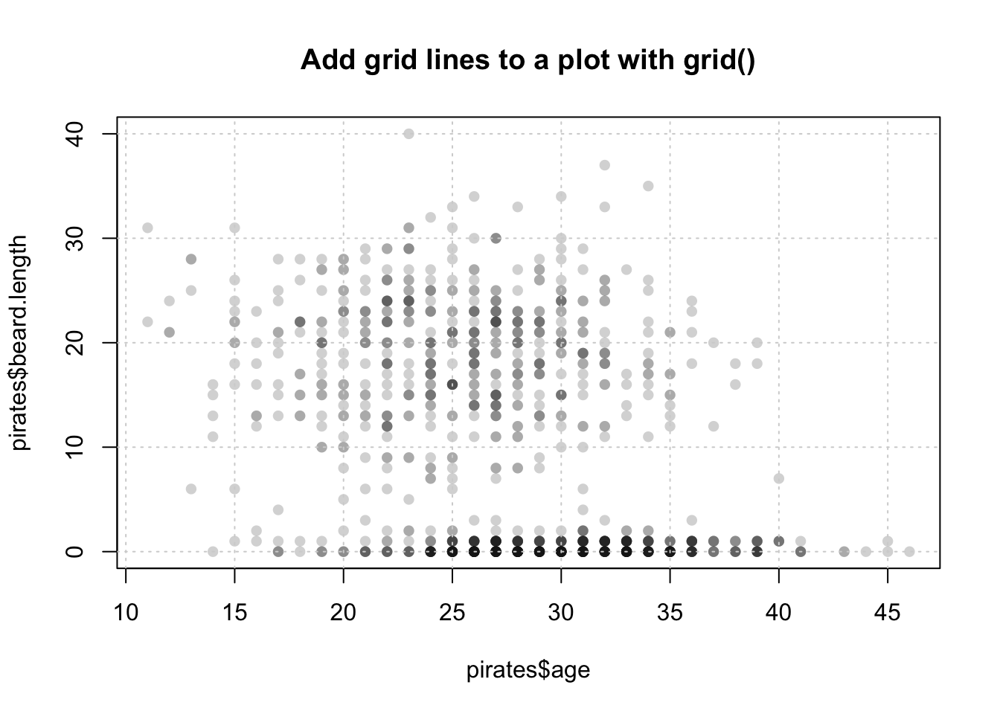
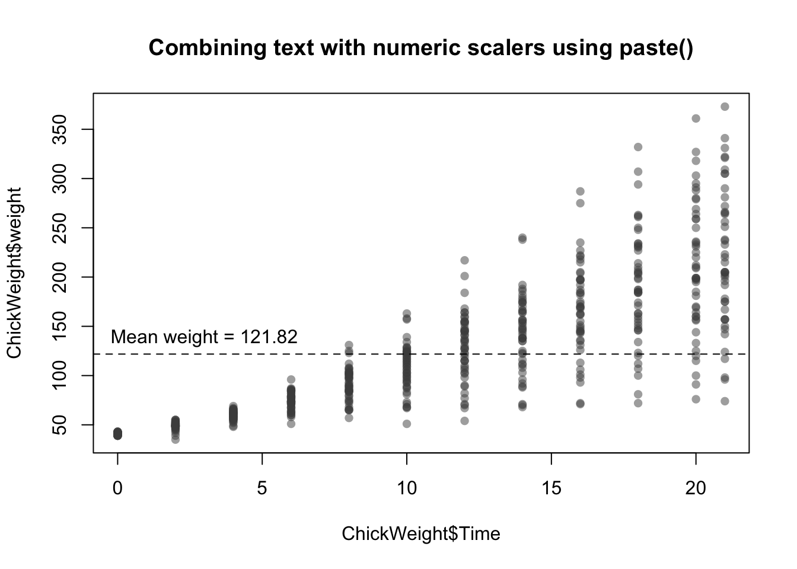

11.7 Low-level plotting functions
Low-level plotting functions allow you to add elements, like points, or lines, to an existing plot. Here are the most common low-level plotting functions:
| Function | Outcome |
|---|---|
points(x, y) |
Adds points |
abline(), segments() |
Adds lines or segments |
arrows() |
Adds arrows |
curve() |
Adds a curve representing a function |
rect(),polygon() |
Adds a rectangle or arbitrary shape |
text(), mtext() |
Adds text within the plot, or to plot margins |
legend() |
Adds a legend |
axis() |
Adds an axis |
11.7.1 Starting with a blank plot
Figure 11.6: Sometimes it’s nice to start with a blank plotting canvas, and then add each element individually with low-level plotting commands
Before you start adding elements with low-level plotting functions, it’s useful to start with a blank plotting space like the one I have in Figure 11.7. To do this, execute the plot() function, but use the type = "n" argument to tell R that you don’t want to plot anything yet. Once you’ve created a blank plot, you can additional elements with low-level plotting commands.
# Create a blank plotting space
plot(x = 1,
xlab = "X Label",
ylab = "Y Label",
xlim = c(0, 100),
ylim = c(0, 100),
main = "Blank Plotting Canvas",
type = "n")Figure 11.7: A blank plotting space, ready for additional elements!
11.7.2 points()
To add new points to an existing plot, use the points() function. The points function has many similar arguments to the plot() function, like x (for the x-coordinates), y (for the y-coordinates), and parameters like col (border color), cex (point size), and pch (symbol type). To see all of them, look at the help menu with ?points().
Let’s use points() to create a plot with different symbol types for different data. I’ll use the pirates dataset and plot the relationship between a pirate’s age and the number of tattoos he/she has. I’ll create separate points for male and female pirates:
# Create a blank plot
plot(x = 1,
type = "n",
xlim = c(100, 225),
ylim = c(30, 110),
pch = 16,
xlab = "Height",
ylab = "Weight",
main = "Adding points to a plot with points()")
# Add coral2 points for male data
points(x = pirates$height[pirates$sex == "male"],
y = pirates$weight[pirates$sex == "male"],
pch = 16,
col = transparent("coral2", trans.val = .8))
# Add steelblue points for female data
points(x = pirates$height[pirates$sex == "female"],
y = pirates$weight[pirates$sex == "female"],
pch = 16,
col = transparent("steelblue3", trans.val = .8))Figure 11.8: Using points() to add points with different colors
11.7.3 abline(), segments(), grid()
| Argument | Outcome |
|---|---|
h, v |
Locations of horizontal and vertical lines (for abline() only) |
x0, y0, x1, y1 |
Starting and ending coordinates of lines (for segments() only) |
lty |
Line type. 1 = solid, 2 = dashed, 3 = dotted, … |
lwd |
Width of the lines specified by a number. 1 is the default (.2 is very thin, 5 is very thick) |
col |
Line color |
To add straight lines to a plot, use abline() or segments(). abline() will add a line across the entire plot, while segments() will add a line with defined starting and end points.
For example, we can add reference lines to a plot with abline(). In the following plot, I’ll add vertical and horizontal reference lines showing the means of the variables on the x and y axes, for the horizontal line, I’ll specify h = mean(pirates$height), for the vertical line, I’ll specify v = mean(pirates$weight)
plot(x = pirates$weight,
y = pirates$height,
xlab = "weight",
ylab = "height",
main = "Adding reference lines with abline",
pch = 16,
col = gray(.5, .2))
# Add horizontal line at mean height
abline(h = mean(pirates$height),
lty = 2) # Dashed line
# Add vertical line at mean weight
abline(v = mean(pirates$weight),
lty = 2) # Dashed line
To change the look of your lines, use the lty argument, which changes the type of line (see Figure 11.9), lwd, which changes its thickness, and col which changes its color

Figure 11.9: Changing line type with the lty argument.
You can also add a regression line (also called a line of best fit) to a scatterplot by entering a regression object created with lm() as the main argument to abline():
# Add a regression line to a scatterplot
plot(x = pirates$height,
y = pirates$weight,
pch = 16,
col = transparent("purple", .7),
main = "Adding a regression line to a scatterplot()")
# Add the regression line
abline(lm(weight ~ height, data = pirates),
lty = 2)
The segments() function works very similarly to abline() – however, with the segments() function, you specify the beginning and end points of the segments with the arguments x0, y0, x1, and y1. In Figure 11.10 I use segments() to connect two vectors of data:
# Before and after data
before <- c(2.1, 3.5, 1.8, 4.2, 2.4, 3.9, 2.1, 4.4)
after <- c(7.5, 5.1, 6.9, 3.6, 7.5, 5.2, 6.1, 7.3)
# Create plotting space and before scores
plot(x = rep(1, length(before)),
y = before,
xlim = c(.5, 2.5),
ylim = c(0, 11),
ylab = "Score",
xlab = "Time",
main = "Using segments() to connect points",
xaxt = "n")
# Add after scores
points(x = rep(2, length(after)), y = after)
# Add connections with segments()
segments(x0 = rep(1, length(before)),
y0 = before,
x1 = rep(2, length(after)),
y1 = after,
col = gray(0, .5))
# Add labels
mtext(text = c("Before", "After"),
side = 1, at = c(1, 2), line = 1)
Figure 11.10: Connecting points with segments().
The grid() function allows you to easily add grid lines to a plot (you can customize your grid lines further with lty, lwd, and col arguments):
# Add gridlines to a plot with grid()
plot(pirates$age,
pirates$beard.length,
pch = 16,
col = gray(.1, .2), main = "Add grid lines to a plot with grid()")
# Add gridlines
grid()
11.7.4 text()
| Argument | Outcome |
|---|---|
x, y |
Coordinates of the labels |
labels |
Labels to be plotted |
cex |
Size of the labels |
adj |
Horizontal text adjustment. adj = 0 is left justified, adj = .5 is centered, and adj = 1 is right-justified |
pos |
Position of the labels relative to the coordinates. pos = 1, puts the label below the coordinates, while 2, 3, and 4 put it to the left, top and right of the coordinates respectively |
With text(), you can add text to a plot. You can use text() to highlight specific points of interest in the plot, or to add information (like a third variable) for every point in a plot. For example, the following code adds the three words “Put”, “Text”, and “Here” at the coordinates (1, 9), (5, 5), and (9, 1) respectively. See Figure 11.11 for the plot:
plot(1,
xlim = c(0, 10),
ylim = c(0, 10),
type = "n")
text(x = c(1, 5, 9),
y = c(9, 5, 1),
labels = c("Put", "text", "here"))Figure 11.11: Adding text to a plot with text()
You can do some cool things with text(), in Figure 11.12 I create a scatterplot of data, and add data labels above each point by including the pos = 3 argument:
# Create data vectors
height <- c(156, 175, 160, 172, 159, 165, 178)
weight <- c(65, 74, 69, 72, 66, 75, 75)
id <- c("andrew", "heidi", "becki", "madisen", "david", "vincent", "jack")
# Plot data
plot(x = height,
y = weight,
xlim = c(155, 180),
ylim = c(65, 80),
pch = 16,
col = yarrr::piratepal("xmen"))
# Add id labels
text(x = height,
y = weight,
labels = id,
pos = 3) # Put labels above the points
Figure 11.12: Adding labels to points with text()
When entering text in the labels argument, keep in mind that R will, by default, plot the entire text in one line. However, if you are adding a long text string (like a sentence), you may want to separate the text into separate lines. To do this, add the text \n where you want new lines to start. Look at Figure 11.13 for an example.
plot(1,
type = "n",
main = "The \\n tag",
xlab = "", ylab = "")
# Text withoutbreaks
text(x = 1, y = 1.3, labels = "Text without \\n", font = 2)
text(x = 1, y = 1.2,
labels = "Haikus are easy. But sometimes they don't make sense. Refrigerator",
font = 3) # italic font
abline(h = 1, lty = 2)
# Text with breaks
text(x = 1, y = .92, labels = "Text with \\n", font = 2)
text(x = 1, y = .7,
labels = "Haikus are easy\nBut sometimes they don't make sense\nRefrigerator",
font = 3) # italic fontFigure 11.13: Break up lines in text with .
11.7.5 Combining text and numbers with paste()
A common way to use text in a plot, either in the main title of a plot or using the text()function, is to combine text with numerical data. For example, you may want to include the text “Mean = 3.14” in a plot to show that the mean of the data is 3.14. But how can we combine numerical data with text? In R, we can do this with the paste() function:
The paste function will be helpful to you anytime you want to combine either multiple strings, or text and strings together. For example, let’s say you want to write text in a plot that says The mean of these data are XXX, where XXX is replaced by the group mean. To do this, just include the main text and the object referring to the numerical mean as arguments to paste(). In Figure X I plot the chicken weights over time, and add text to the plot specifying the overall mean of weights.
# Create the plot
plot(x = ChickWeight$Time,
y = ChickWeight$weight,
col = gray(.3, .5),
pch = 16,
main = "Combining text with numeric scalers using paste()")
# Add reference line
abline(h = mean(ChickWeight$weight),
lty = 2)
# Add text
text(x = 3,
y = mean(ChickWeight$weight),
labels = paste("Mean weight =",
round(mean(ChickWeight$weight), 2)),
pos = 3)
11.7.6 curve()
| Argument | Outcome |
|---|---|
expr |
The name of a function written as a function of x that returns a single vector. You can either use base functions in R like expr = $x^2$, expr = x + 4 - 2, or use your own custom functions such as expr = my.fun, where my.fun is previously defined (e.g.; my.fun <- function(x) {dnorm(x, mean = 10, sd = 3)) |
from, to |
The starting (from) and ending (to) value of x to be plotted. |
add |
A logical value indicating whether or not to add the curve to an existing plot. If add = FALSE, then curve() will act like a high-level plotting function and create a new plot. If add = TRUE, then curve() will act like a low-level plotting function. |
lty, lwd, col |
Additional standard line arguments |
The curve() function allows you to add a line showing a specific function or equation to a plot. For example, to add the function \(x^2\) to a plot from the x-values -10 to 10, you can run the code:
# Plot the function x^2 from -10 to +10
curve(expr = x^2,
from = -10,
to = 10, lwd = 2)
If you want to add a custom function to a plot, you can define the function and then use that function name as the argument to expr. For example, to plot the normal distribution with a mean of 10 and standard deviation of 3, you can use this code:
# Plot the normal distribution with mean = 22 and sd = 3
# Create a function
my.fun <- function(x) {dnorm(x, mean = 2, sd = 3)}
curve(expr = my.fun,
from = -10,
to = 10, lwd = 2)
In Figure~11.14, I use the curve() function to create curves of several mathematical formulas.
# Create plotting space
plot(1,
xlim = c(-5, 5), ylim = c(-5, 5),
type = "n",
main = "Plotting function lines with curve()",
ylab = "", xlab = "")
# Add x and y-axis lines
abline(h = 0)
abline(v = 0)
# set up colors
col.vec <- piratepal("google")
# x ^ 2
curve(expr = x^2, from = -5, to = 5,
add = TRUE, lwd = 3, col = col.vec[1])
# sin(x)
curve(expr = sin, from = -5, to = 5,
add = TRUE, lwd = 3, col = col.vec[2])
# dnorm(mean = 2, sd = .2)
my.fun <- function(x) {return(dnorm(x, mean = 2, sd = .2))}
curve(expr = my.fun,
from = -5, to = 5,
add = TRUE,
lwd = 3, col = col.vec[3])
# Add legend
legend("bottomright",
legend = c("x^2", "sin(x)", "dnorm(x, 2, .2)"),
col = col.vec[1:3],
lwd = 3)Figure 11.14: Drawing function lines with curve()
11.7.7 legend()
| Argument | Outcome |
|---|---|
x, y |
Coordinates of the legend - for example, x = 0, y = 0 will put the text at the coordinates (0, 0). Alternatively, you can enter a string indicating where to put the legend (i.e.; "topright", "topleft"). For example, "bottomright" will always put the legend at the bottom right corner of the plot. |
labels |
A string vector specifying the text in the legend. For example, legend = c("Males, "Females") will create two groups with names Males and Females. |
pch, lty, lwd, col, pt.bg, ... |
Additional arguments specifying symbol types (pch), line types (lty), line widths (lwd), background color of symbol types 21 through 25 (pt.bg) and several other optional arguments. See ?legend for a complete list |
The last low-level plotting function that we’ll go over in detail is legend() which adds a legend to a plot. For example, to add a legend to to bottom-right of an existing graph where data from females are plotted in blue circles and data from males are plotted in pink circles, you’d use the following code:
# Add a legend to the bottom right of a plot
legend("bottomright", # Put legend in bottom right of graph
legend = c("Females", "Males"), # Names of groups
col = c("blue", "orange"), # Colors of symbols
pch = c(16, 16)) # Symbol typesIn Figure 11.15 I use this code to add a legend to plot containing data from males and females:
# Create plot with data from females
plot(x = pirates$age[pirates$sex == "female"],
y = pirates$tattoos[pirates$sex == "female"],
xlim = c(0, 50),
ylim = c(0, 20),
pch = 16, col = yarrr::transparent("red", .7),
xlab = "Age", ylab = "Tattoos",
main = "Adding a legend with legend()")
# Add data from males
points(x = pirates$age[pirates$sex == "male"],
y = pirates$tattoos[pirates$sex == "male"],
pch = 16, col = yarrr::transparent("blue", .7))
# Add legend
legend("bottomright",
legend = c("Females", "Males"),
col = transparent(c('red', 'blue'), .5),
pch = c(16, 16),
bg = "white")
Figure 11.15: Adding a legend to a plot with legend().
There are many more low-level plotting functions that can add additional elements to your plots. Here are some I use. To see examples of how to use each one, check out their associated help menus.
plot(1, xlim = c(1, 100), ylim = c(1, 100),
type = "n", xaxt = "n", yaxt = "n",
ylab = "", xlab = "", main = "Adding simple figures to a plot")
text(25, 95, labels = "rect()")
rect(xleft = 10, ybottom = 70,
xright = 40, ytop = 90, lwd = 2, col = "coral")
text(25, 60, labels = "polygon()")
polygon(x = runif(6, 15, 35),
y = runif(6, 40, 55),
col = "skyblue")
text(25, 30, labels = "segments()")
segments(x0 = runif(5, 10, 40),
y0 = runif(5, 5, 25),
x1 = runif(5, 10, 40),
y1 = runif(5, 5, 25),
lwd = 2)
text(75, 95, labels = "symbols(circles)")
symbols(x = runif(3, 60, 90),
y = runif(3, 60, 70),
circles = c(1, .1, .3),
add = TRUE, bg = gray(.5, .1))
text(75, 30, labels = "arrows()")
arrows(x0 = runif(3, 60, 90),
y0 = runif(3, 10, 25),
x1 = runif(3, 60, 90),
y1 = runif(3, 10, 25),
length = .1, lwd = 2)
Figure 11.16: Additional figures one can add to a plot with rect(), polygon(), segments(), symbols(), and arrows().